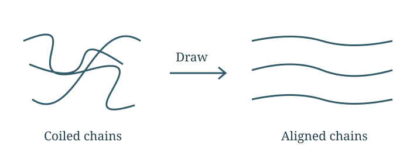
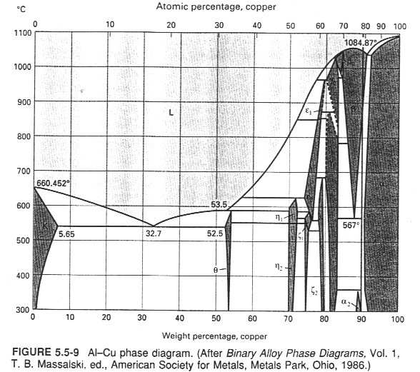
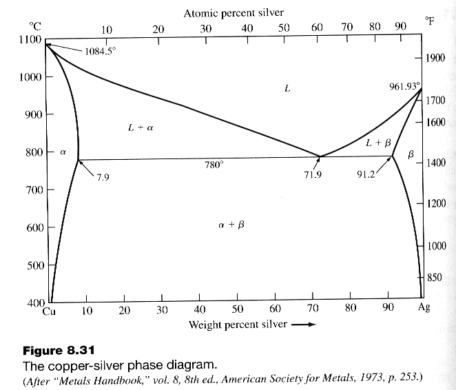
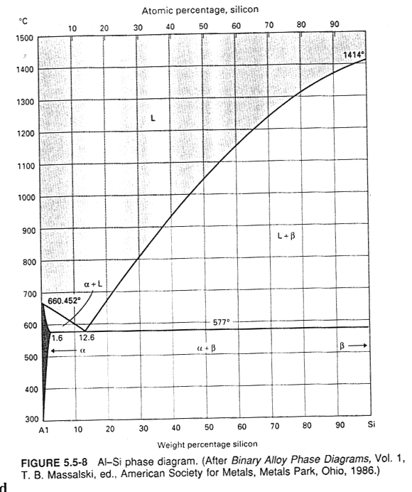
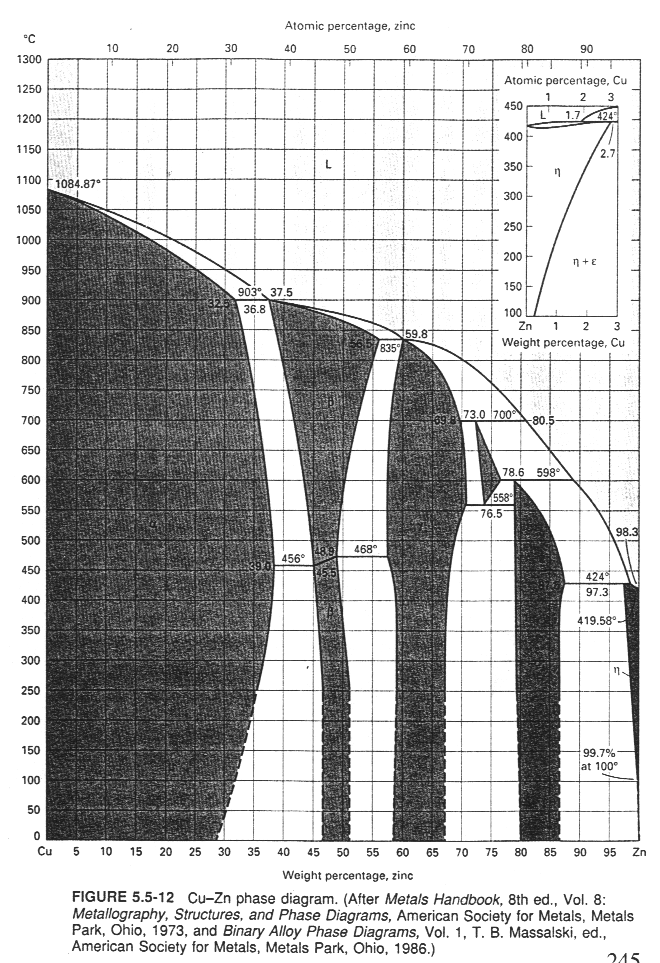
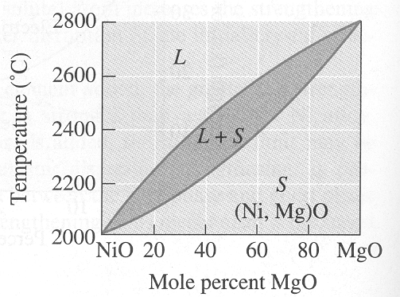
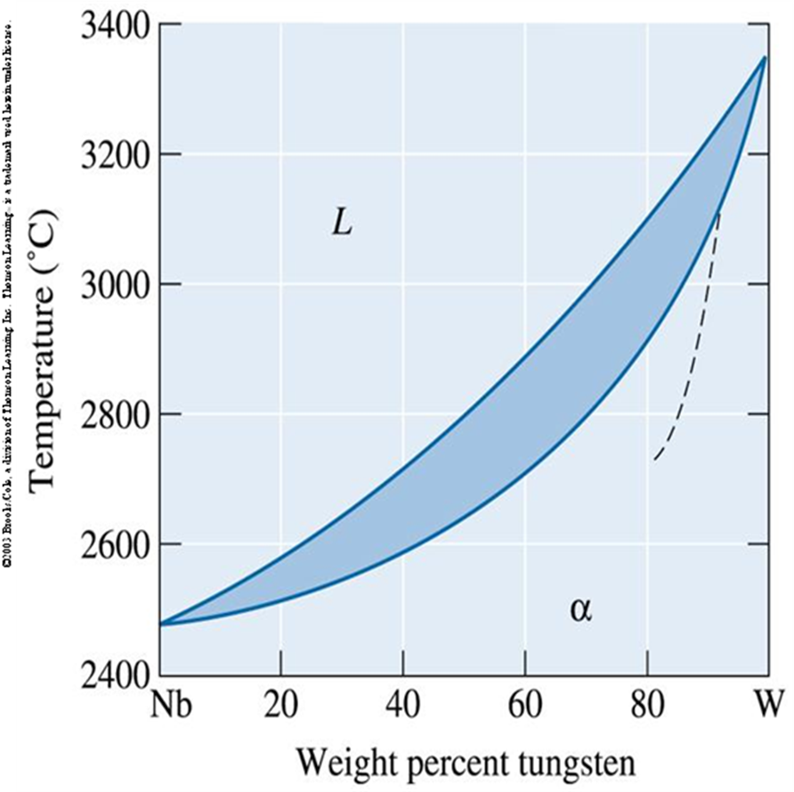
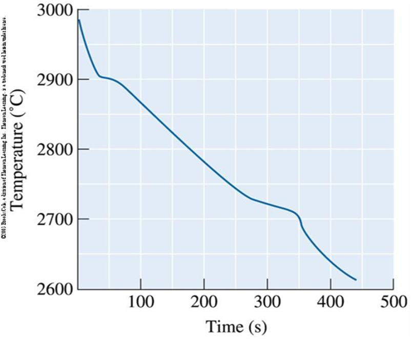
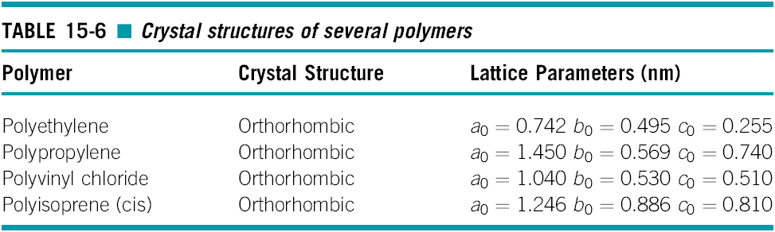

Materials Assignment 2
Part I · Worked solutions
14 questions. Equations, substitutions and final answers, with the original phase diagrams where needed.
Assignment 1 solutions → · Practice questions
Question 1 When a thermoplastic becomes rigid
Below what temperature must a thermoplastic be to become rigid?
Identify the transition
Below the glass-transition temperature, large-scale motion of the amorphous chain segments is restricted. The polymer becomes glassy and rigid.
Final answer
This is the glass-transition answer. Crystalline regions in a semicrystalline polymer can keep it stiff above Tg until they melt at Tm.
Question 2 Strengthening during drawing
Why do thermoplastic polymers get stronger during plastic deformation?

Follow the chains
Drawing uncoils and aligns polymer chains along the pull. Aligned chains are harder to extend further, so the material strain-hardens in that direction. Drawing may also increase crystallinity.
Final answer
Question 3 A flat solidification front
During nucleation and growth, describe how the liquid–solid interface stays flat.
Consider a small bump
For a stable planar front, liquid ahead is warmer than its local freezing temperature. A solid bump entering that warmer liquid tends to remelt.
Remove latent heat
Heat released by freezing is carried away, typically through the solid. Protrusions remelt and the interface stays approximately flat. If the liquid ahead becomes undercooled, bumps can grow into dendrites instead.
Final answer
Question 4 Why elastomers stretch
Elastomers and thermosets are both cross-linked. Why can an elastomer stretch more than 200%?
Compare the cross-links
Elastomers have long, flexible chain segments between relatively sparse cross-links. Above Tg, those segments can uncoil and align without needing large bond stretching.
Explain recovery
Cross-links stop the chains from flowing freely past one another. When the load is removed, the chains tend to coil again. Dense cross-linking in rigid thermosets leaves much less room for this motion.
Final answer
Question 5 Gibbs phase rule
Find the degrees of freedom of an Al–20 wt% Cu alloy at 700°C, 550°C and 500°C.

Choose the phase rule
Use the full rule because the handout’s first two answers count pressure as a variable.
(a) 700°C
The point is in the single liquid field.
(b) 550°C
The point is in the α + liquid field.
(c) 500°C
The diagram places the point in α + θ, which contains two solid phases.
Final answer
The handout prints F = 3 for (c), but its diagram shows two phases. That printed answer is inconsistent. At fixed pressure, the reduced rule F = C − P + 1 gives 2, 1 and 1 instead.
Question 6 Cooling copper–silver alloys
Describe slow cooling from liquid for (a) 20 at.% Ag and (b) 80 at.% Ag. Use the top atomic-percent scale.

(a) 20 at.% Ag
This is on the Cu-rich side. The melt first forms Cu-rich α crystals at the liquidus. As α grows, the remaining liquid becomes richer in Ag. At about 780°C, the remaining liquid changes into α + β eutectic.
(b) 80 at.% Ag
This is on the Ag-rich side. Ag-rich β crystals form first. The remaining liquid moves toward the eutectic composition and changes into α + β at about 780°C.
Continue cooling
Below the eutectic, α and β become richer in their own base metals as solid solubility falls. Both final structures contain α and β, but their primary crystals differ.
Final answer
Question 7 Phase amounts in Al–Si
Find each phase mass in 50 kg of Al–10 wt% Si at the four temperatures.

Use the lever rule
For a two-phase tie line, each phase fraction uses the opposite segment.
(a) 700°C
The alloy is above the liquidus: all liquid.
(b) 590°C
Read approximately Cα = 1.5 and CL = 11 wt% Si from the diagram.
(c) Just above 577°C
The tie line ends are Cα = 1.6 and CL = 12.6 wt% Si.
(d) Just below 577°C
The liquid is gone. Use the α–β tie line, with Cβ ≈ 100 wt% Si.
Final answer
Graph-based values are approximate. At 590°C, use your own careful endpoint readings if they differ. The eutectic is a mixture of α and β, not a third phase.
Question 8 First solid in brass
Cool 1.0 kg of Cu–35 wt% Zn. Find (a) the first-solid temperature and (b) the phase and composition.

(a) Read the liquidus
Start at 35 wt% Zn on the bottom axis and move up to the liquidus.
(b) Follow a horizontal tie line
At that temperature, move left to the solid boundary. The first solid is Cu-rich α with approximately 31 wt% Zn.
Final answer
The phase-boundary readings are approximate; about 30–32 wt% Zn is reasonable for the solid composition on this figure.
Question 9 MgO added to NiO
How much MgO must be added to 1 kg of NiO for a solidus temperature of 2200°C?

Read the solidus
At 2200°C, the lower boundary gives approximately 35 mol% MgO. The axis is mole percent, not mass percent.
Convert NiO mass to moles
Use MNiO = 74.69 g/mol.
Solve for added MgO
Convert to grams
Use MMgO = 40.30 g/mol.
Final answer
The answer depends on the solidus reading. In general, mMgO = (1000/74.69)[x/(1−x)](40.30), with x as a mole fraction.
Question 10 Tungsten added to Nb–W
A 1200 lb Nb–40 wt% W bath is held at 2800°C. Find the W addition at first solid and when all material is solid.

Find initial tungsten mass
Let x be the mass of pure W added. It increases both tungsten mass and total mass.
At the first solid
Read the liquidus at 2800°C as approximately 50 wt% W.
When fully solid
Read the solidus as approximately 70 wt% W.
Final answer
These use approximate graph readings of 50 wt% W at the liquidus and 70 wt% W at the solidus. The second answer is total added W from the original bath, or 960 lb beyond the first-solid addition. Use x = (1200c − 480)/(1 − c) if your endpoint reading c differs.
Question 11 Read a cooling curve
Find the liquidus temperature, solidus temperature and freezing range for the shown Nb–W alloy.

(a) Liquidus
The first change in slope marks the start of freezing.
(b) Solidus
The last change in slope marks the end of freezing.
(c) Freezing range
Subtract the solidus from the liquidus.
Final answer
Question 12 Repeat units in polypropylene
Use ρ = 0.89 g/cm³, repeat-unit molar mass 42 g/mol, and orthorhombic cell sides 1.450, 0.569 and 0.740 nm.

Find unit-cell volume
The cell is orthorhombic, so multiply its three side lengths.
Compare cell mass and repeat-unit mass
Divide
The number of repeat units in a cell is a whole number.
Final answer
The supplied approximate density gives 7.79; it is consistent with about eight repeat units.
Question 13 Stress relaxation and service life
Stress falls from 2500 psi to 2400 psi in 100 h at constant strain. It must remain above 2100 psi. Use σ = σ₀ exp(−t/λ).
Find the relaxation time
Divide by the initial stress and take natural logs.
Find the time at 2100 psi
Use the original 2500 psi for total life from loading.
State total and remaining life
Subtract the elapsed 100 h if remaining life is requested.
Final answer
To stay strictly above 2100 psi, service time must be less than the threshold time.
Question 14 Adjusting ABS composition
ABS contains BS rubber and a rigid SAN copolymer. How should their proportions change for the three desired properties?
(a) Impact properties
Increase the rubbery BS contribution relative to SAN. Rubber domains help absorb impact energy and reduce brittle fracture.
(b) Room-temperature ductility
Increase the rubbery BS contribution. This generally allows more deformation before fracture, with some loss of stiffness.
(c) Room-temperature strength
Increase the rigid SAN contribution relative to BS rubber. The SAN matrix carries load and generally improves stiffness and strength, with a toughness tradeoff.
Final answer
These are qualitative formulation trends. Particle size, bonding between phases and processing also affect the properties; the handout does not give enough data for exact percentages.